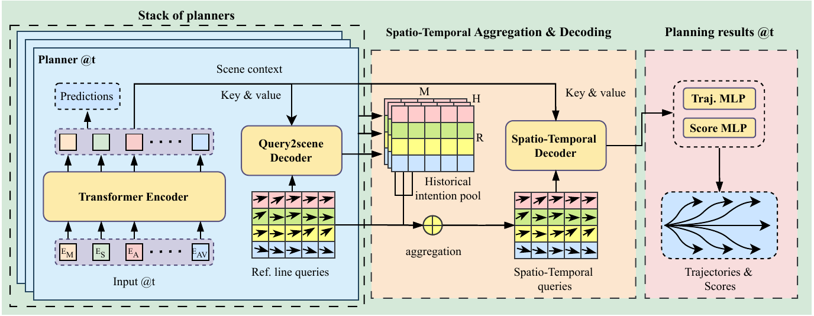
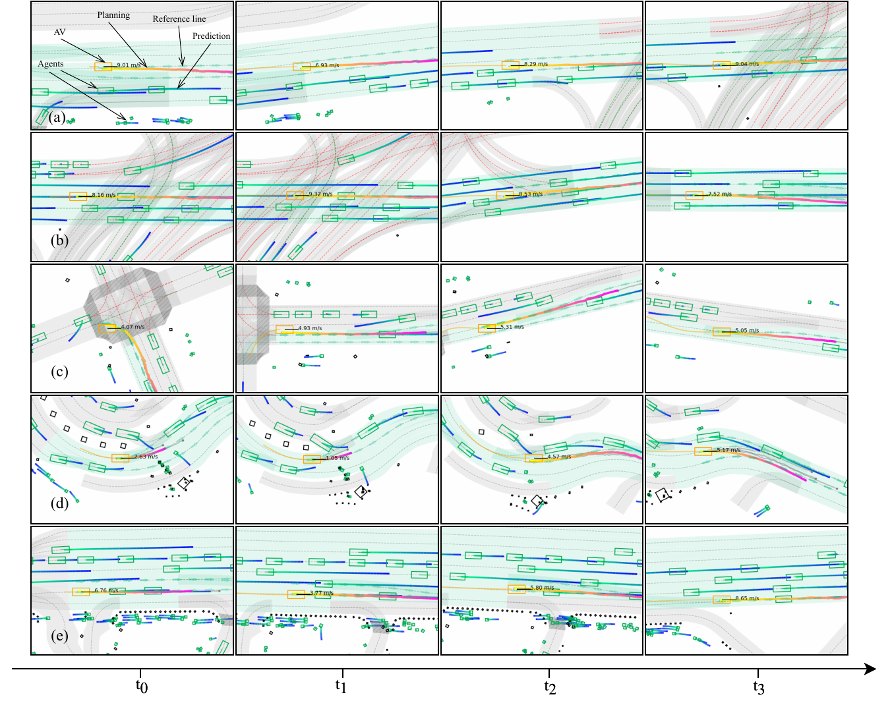

Decision-making and planning in autonomous driving critically reflect the safety of the system, making effective planning imperative. Current imitation learning-based planning algorithms often merge historical trajectories with present observations to predict future candidate paths. However, these algorithms typically assess the current and historical plans independently, leading to discontinuities in driving intentions and an accumulation of errors with each step in a discontinuous plan. To tackle this challenge, this paper introduces LHPF, an imitation learning planner that integrates historical planning information. Our approach employs a historical intention aggregation module that pools historical planning intentions, which are then combined with a spatial query vector to decode the final planning trajectory. Furthermore, we incorporate a comfort auxiliary task to enhance the human-like quality of the driving behavior. Extensive experiments using both real-world and synthetic data demonstrate that LHPF not only surpasses existing advanced learning-based planners in planning performance but also marks the first instance of a purely learning-based planner outperforming the expert. Additionally, the application of the historical intention aggregation module across various backbones highlights the considerable potential of the proposed method.
We compare two imitation learning planners for autonomous driving, focusing on the role of historical intentions. As shown in Figure 1, while both planners perform well initially, the planner without historical context diverges over time, whereas the planner with historical embeddings maintains consistent accuracy. Figure 2 illustrates the continuity and evolution of driving behaviors, emphasizing the importance of incorporating historical context for stable real-world planning.

A stack of planners generates historical planning embeddings at each time step, which are stored in a historical intention pool and combined with reference line queries. Spatio-temporal queries are then aggregated and processed using self and cross attention with scene context as keys and values. Finally, the current planning embedding is passed through a multi-layer perceptron to generate future trajectories and scores.
An aggressive overtaking behavior. The ego vehicle changes lanes to a neighboring lane at first, accelerates past vehicles in the original lane, and successfully completes the overtaking. This scenario highlights the ability of our method to make timely lane changes and execute aggressive overtaking maneuvers effectively.
Competing for the right to turn at intersections. LHPF exhibites more natural and efficient driving policy when interact with other agents.
A collision scenario. While Pluto's conservative strategy often avoids risks, it fails to ensure safety in highly interactive scenarios, where LHPF demonstrates smoother interactions with surrounding vehicles.
A robot frozen scenario. This phenomenon highlights a key advantage of LHPF's historical planning mechanism. When the ego vehicle encounters a front car that causes it to decelerate, the sequential slowing down can lead to causal confusion in traditional planners like Pluto. As a result, Pluto might mistakenly generalize the slowing behavior and halt at intersections even in the absence of a front car. Surprisingly, LHPF mitigates this issue by leveraging its historical planning embeddings, which provide temporal consistency and preserve the ego's original driving intentions. This integration enables LHPF to better distinguish between causally linked behaviors and contextual artifacts, ensuring smoother and more deliberate decision-making in complex scenarios.

(a) An aggressive overtaking behavior. The ego vehicle changes lanes to a neighboring lane at t1, accelerates past vehicles in the original lane at t2, and successfully com- pletes the overtaking by t3. This scenario highlights the ability of our method to make timely lane changes and exe- cute aggressive overtaking maneuvers effectively. (b) A high-density traffic intersection scenario. At time t0, the autonomous vehicle is hindered by slow-moving traf- fic ahead. By t1, it initiates a lane change maneuver and starts accelerating, successfully transitioning to an adjacent lane by t3. This demonstrates how our model handles com- plex traffic interactions and efficiently maneuvers through dense environments. (c) A right-turn at an intersection. The ego vehicle begins to turn right into the side road at t0, fully entering it by t1. At this moment, a vehicle from the opposite direction unex- pectedly overtakes, forcing the ego vehicle to make a sharp right turn and realign back to the intended direction by t3. This showcases the planner’s ability to react dynamically to sudden obstacles and adjust its trajectory smoothly. (d) A high-interaction roundabout scenario. At t1, the ego vehicle engages in a negotiation with a large vehicle at- tempting to merge into the main road. After yielding to let the large vehicle pass, it quickly accelerates in the neigh- boring lane at t3, overtaking the large vehicle by t4. This scenario highlights the planner’s capability to handle inter- actions with other road users and optimize vehicle trajecto- ries in crowded environments. (e) An overtaking attempt. Finally, we display an over- taking attempt by the ego vehicle. Due to the slow-moving vehicle ahead, the ego vehicle continuously decelerates be- tween t0 and t1. At t2, it attempts a left lane change to overtake but quickly abandons this maneuver due to a fast- approaching vehicle from the left rear, returning to the origi- nal lane at t3 and continues to observe and wait for an over- taking opportunity. This showcases the flexible and adap- tive nature of our method in dynamic driving scenarios.
@misc{wang2024lhpflookhistoryplan,
title={LHPF: Look back the History and Plan for the Future in Autonomous Driving},
author={Sheng Wang and Yao Tian and Xiaodong Mei and Ge Sun and Jie Cheng and Fulong Ma and Pedro V. Sander and Junwei Liang},
year={2024},
eprint={2411.17253},
archivePrefix={arXiv},
primaryClass={cs.RO},
url={https://arxiv.org/abs/2411.17253},
}